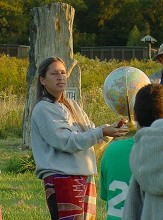

Please note: the AAS Obituaries are temporarily being hosted on this website while their full content is being ingested into the PubPub publishing platform newly adopted by the Bulletin of the American Astronomical Society. When the migration is complete, your existing links will take you to the final, migrated content. Contact peter.williams@aas.org with any questions.
Judith S. Young (1952-2014)
Judy Young, one of the leading researchers in extragalactic molecular observations, died on 23 May 2014 after a long battle with cancer. Her pioneering galactic structure research included some of the earliest mapping of CO emission in galaxies followed by the most extensive surveys molecular gas and star formation in nearby galaxies. Judy was also a popular professor and leader of outreach efforts in the Department of Astronomy at the University of Massachusetts, Amherst where she had been since 1979.
Judy was born 15 September 1952 to Bob and Vera Rubin. She attended Radcliffe/Harvard University, where she received her BA in 1974. She completed her PhD degree in Physics at the University of Minnesota on “The Isotopic Composition of Cosmic Rays” under the guidance of Phyllis Freier. She then came to the Five College Radio Observatory at the University of Massachusetts as a Postdoctoral Fellow in 1979. After three years she was appointed to the teaching faculty at University of Massachusetts (Amherst) and full professor in 1993. She also spent sabbaticals in Arizona and at the University of Hawaii. She received numerous awards, including the Annie Jump Cannon Prize (1982), the Maria Goeppert-Mayer Award (1986) of the American Astronomical Society and a Sloan Research Fellowship (1986-1989). Judy published more than 130 papers and supervised 5 Ph.D. students and 15 undergraduate research projects.
Judy’s major area of astronomical research was extragalactic observations of star-forming molecular gas using CO lines and related observations of star formation tracers in blue light, H-alpha emission, and the infrared continuum. Her molecular observations were made with the 14 m single dish FCRAO telescope. The initial imaging of nearby spiral galaxies, in collaboration with Nick Scoville, then at UMass, first clearly demonstrated the proportionality of the star formation rate surface density to the molecular gas. They also first showed the efficacy of using the CO emission line as a tracer of the molecular gas mass. Subsequent surveys of CO and star formation led by Judy were conducted with her PhD students and postdocs over the following decades – 1982-2001. These projects included a survey with Linda Tacconi of late-type spirals and dwarf galaxies; an extensive survey probing the depletion of HI and H2 in Virgo cluster galaxies with Jeff Kenney; and some of the first observations of CO in ULIRG galaxies with Dave Sanders and Nick Scoville. She also led the FCRAO Extragalactic CO Survey, having major participation from Nick Devereux, Pat Knezek, Shuding Xie, and Lori Allen in addition to those mentioned earlier. This survey included CO mapping for 300 low-redshift galaxies; and despite the enormous number of objects, it was a characteristic of Judy to know every detail of each galaxy and to love them as family.
Judy was also deeply committed to outreach activities. In 1992 Judy initiated the UMass Sunwheel Project – her plan to build a Stonehenge-like circle of standing stones marking the rising and setting sun at the equinoxes and solstices as a way to teach about celestial motions (http://www.umass.edu/sunwheel/). It took almost 5 years of negotiating for space on campus, taking careful measurements, and gaining support from the Healey Foundation, before she was able to install a ring of 2-foot stones in 1997 and began making solstice and equinox presentations. By 2000, with private donations and NSF support, Judy erected a ring of 8-to-10 foot tall granite rocks, marking motions of both the Sun and Moon. For this work Judy received the University’s Distinguished Academic Outreach Award in 2000. Even as Judy grew weak from multiple myeloma, she continued to lead sunrise and sunset events at the Sunwheel as late as the summer solstice of 2013. The Sunwheel continues to be a popular attraction near the campus football stadium, marrying Judy’s appreciation of spiritual aspects and understandings from native American culture, a love of nature, and her desire to communicate our scientific understanding to non-scientists.
Judy is survived by her daughter Laura, her mother Vera Rubin, and brothers David, Karl and Allan Rubin.
Obituary written by: Nick Scoville (California Institute of Technology), Steve Schneider (University of Massachusetts, Amherst)
Additional links:
BAAS Citation: BAAS, 2014, 46, 007